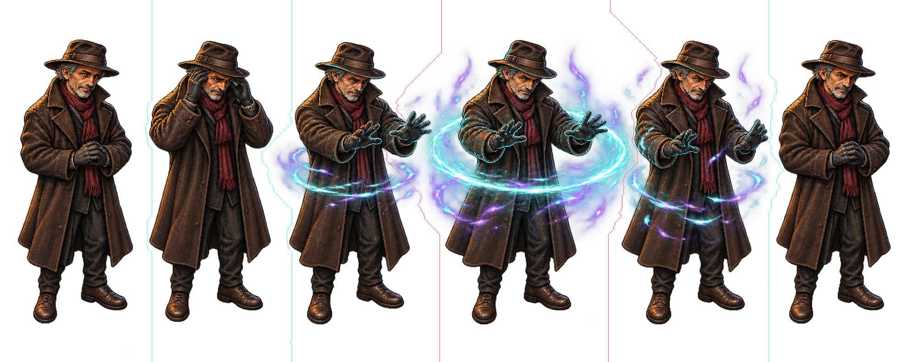
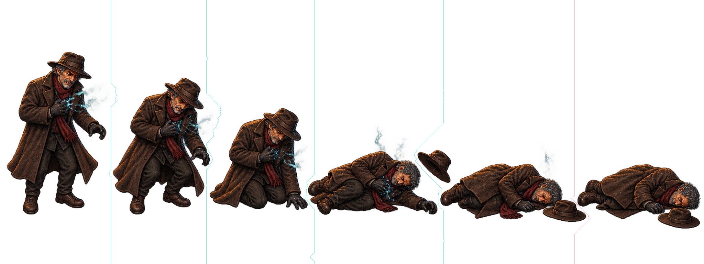
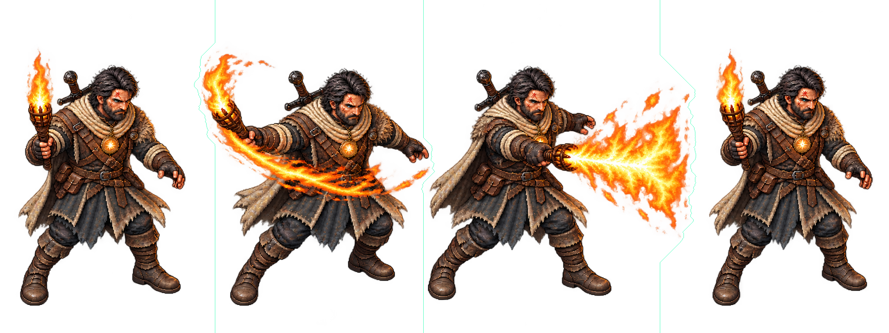
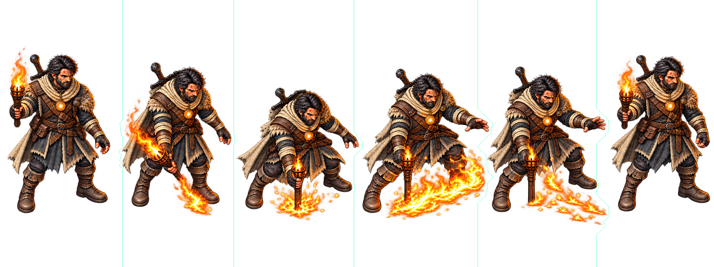
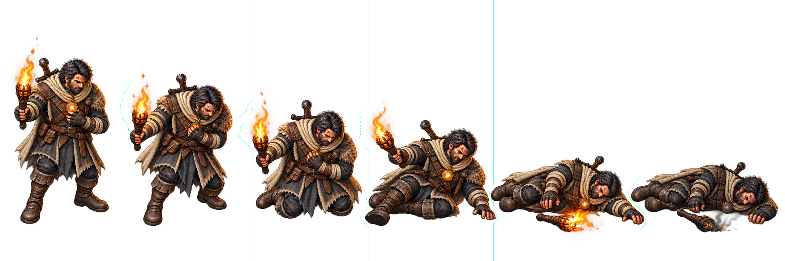

Três fontes de Erik podem ser separadas por corredores curvos transparentes: dezesseis quadros nativos. A recomposição recupera exatamente os pixels RGBA da fonte, uma vez cada, sem resize/repintura. Não estão normalizados, aceitos visualmente ou integrados.
Verde: corredor de três pixels sem alfa >8. Vermelho: caminho avaliado atravessa pixels significativos e não foi extraído. AO09/AO10 continuam retidas. A avaliação é limitada aos intervalos escolhidos, sem prova de impossibilidade global.
Análise/traços · Extrações e hashes · Verificação RGBA
HELD_AMBIGUOUS_CONNECTED_PIXELS_IN_SEARCH_INTERVAL

[1, 2]: 0 linhas com alfa >8; [2, 3]: 0 linhas com alfa >8; [3, 4]: 149 linhas com alfa >8; [4, 5]: 178 linhas com alfa >8; [5, 6]: 0 linhas com alfa >8
HELD_AMBIGUOUS_CONNECTED_PIXELS_IN_SEARCH_INTERVAL

[1, 2]: 0 linhas com alfa >8; [2, 3]: 0 linhas com alfa >8; [3, 4]: 0 linhas com alfa >8; [4, 5]: 0 linhas com alfa >8; [5, 6]: 4 linhas com alfa >8
NONRECTANGULAR_EXTRACTION_FEASIBLE_GEOMETRY_ONLY

[1, 2]: 0 linhas com alfa >8; [2, 3]: 0 linhas com alfa >8; [3, 4]: 0 linhas com alfa >8
NONRECTANGULAR_EXTRACTION_FEASIBLE_GEOMETRY_ONLY

[1, 2]: 0 linhas com alfa >8; [2, 3]: 0 linhas com alfa >8; [3, 4]: 0 linhas com alfa >8; [4, 5]: 0 linhas com alfa >8; [5, 6]: 0 linhas com alfa >8
Quadro 1 · Quadro 2 · Quadro 3 · Quadro 4 · Quadro 5 · Quadro 6
NONRECTANGULAR_EXTRACTION_FEASIBLE_GEOMETRY_ONLY

[1, 2]: 0 linhas com alfa >8; [2, 3]: 0 linhas com alfa >8; [3, 4]: 0 linhas com alfa >8; [4, 5]: 0 linhas com alfa >8; [5, 6]: 0 linhas com alfa >8
Quadro 1 · Quadro 2 · Quadro 3 · Quadro 4 · Quadro 5 · Quadro 6